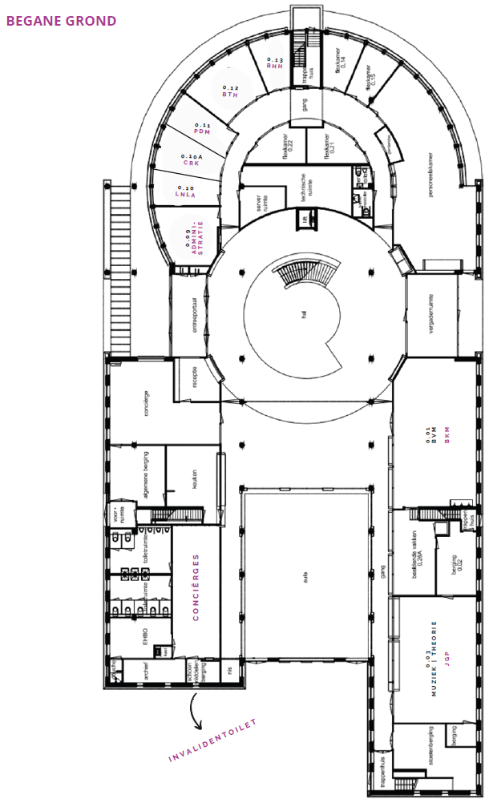
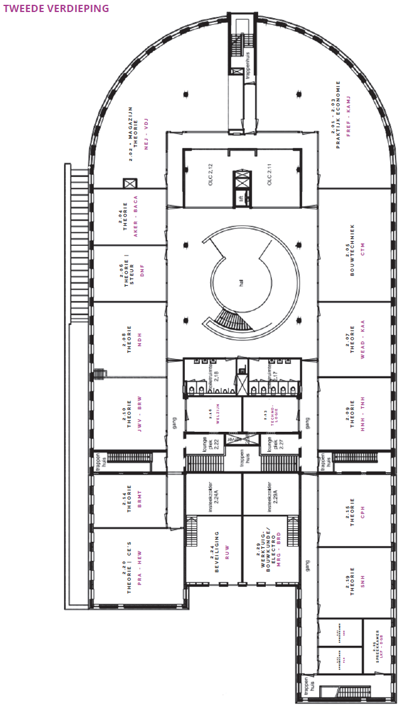

Home
Over het Hoornbeeck College
Over de ouderavond
Doel
Organisatie
Programma
Plattegrond
Verschillende opleidingen
Sfeerbeelden
Over de ontwikkelaar
Contact
Plattegrond van Hoornbeeck College Kampen
Krijg hier inzicht hoe de school eruit ziet.

